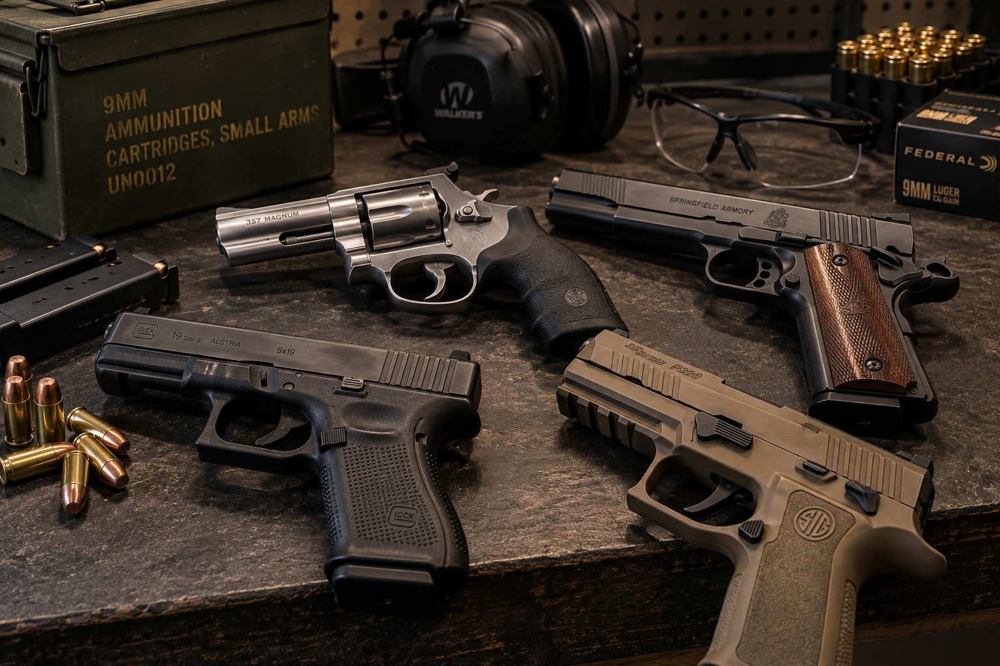

There are many different types and sizes of handguns. Two common types that can be seen at shooting ranges are semi-automatic pistols and revolvers.

Semi-automatic pistols are commonly used for recreational target shooting. They normally use a removable magazine.
Revolvers have a rotating cylinder instead of the removable magazine found in many semi-automatic pistols.